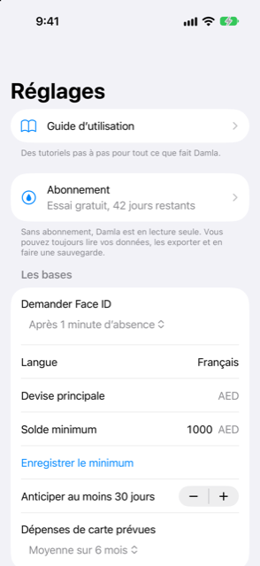

Guide › Réglages, sauvegarde et confidentialité
Réglages, page par page
Où se trouve chaque chose dans Réglages.
Réglages rassemble les réglages du quotidien : le verrouillage, le solde minimum, les rappels, les données de marché, les automatisations et vos sauvegardes. Cette page est une carte, de haut en bas.

Quand l'utiliser
- Vous ne vous souvenez plus sur quelle page se trouve un réglage.
- Vous voulez savoir ce que fait une page avant de l'ouvrir.
Étape par étape
- Ouvrez Aujourd'hui et touchez l'engrenage en haut à droite. Cela ouvre Réglages.
- Touchez une ligne pour ouvrir cette page ; le bouton retour permet de revenir.
Les pages, de haut en bas
De haut en bas, la liste comprend le Guide d’utilisation, Abonnement, une section Les bases, puis les lignes des autres pages.
Guide d’utilisation
Tutoriels pas à pas pour tout ce qui existe dans Damla. L'icône de livre sur Aujourd'hui ouvre le même guide.
Abonnement
L'abonnement se trouve sur cette page. Voir L'essai gratuit et l'abonnement.
Les bases
| Réglage | Ce qu'il fait |
|---|---|
| Demander Face ID | À chaque fois, ou après 1, 5 ou 15 minutes d'absence. |
| Devise principale | La devise dans laquelle tout est additionné. Elle ne peut pas être modifiée ici. |
| Solde minimum | Le montant que vous voulez laisser intact. Saisissez-le et touchez Enregistrer le minimum. |
| Regarder devant au moins … jours | Jusqu'où la prévision regarde, même si votre prochain revenu arrive plus tôt. De 0 à 90 jours, par pas de 5 jours. |
| Dépenses de carte attendues | Désactivé, ou la moyenne sur 3, 6 ou 12 mois ; cela complète les factures de carte pour les relevés pas encore émis. Dès qu'un relevé est émis, son montant réel prend le relais. |
Ce qu'il est sûr de dépenser, c'est ce qui reste au-dessus du minimum à votre point le plus bas ; le minimum et le regard en avant le changent donc tous les deux.
Rappels
- Me prévenir avant les échéances : une notification la veille et le jour même pour les factures, les revenus et les factures de carte arrivés à échéance et pas encore enregistrés. Vous choisissez l'heure, de 06:00 à 22:00.
- Me prévenir quand mon solde risque de passer sous mon minimum : une seule notification, calculée sur ce téléphone à partir de vos données.
Si vous avez désactivé les notifications pour Damla dans les Réglages de l'iPhone, une ligne ici le dit.
Devises et prix
- Données de marché : activez Mettre à jour les taux de change chaque jour et Rechercher les prix des placements, ou touchez Actualiser maintenant pour récupérer tout de suite. Une actualisation manuelle essaie toujours les taux, et les prix seulement si cet interrupteur est activé. Après une actualisation, un rapport montre ce que chaque source a mis à jour, ignoré ou manqué. Les lignes indiquent la dernière mise à jour de chaque source.
- Achats par carte dans une autre devise : la majoration de la banque avec laquelle Damla estime (2,5 % quand le champ est vide), et comment lire les petits mots de devise tels que « DH » et « DHS » dans vos messages — comme votre devise principale, ou comme AED ou MAD.
- Taux de change : une ligne par devise que vous utilisez, avec le taux en vigueur, s'il a été récupéré ou s'il est le vôtre, et sa date. Vous pouvez saisir le vôtre.
- Symboles : une ligne par placement, pour récupérer son prix.
Les deux consultations sont facultatives et l'app fonctionne hors ligne. Détails : Prix et taux de change.
Catégories
Ajoutez des catégories, et renommez-les ou supprimez-les. Détails : Bénéficiaires et catégories.
Messages bancaires et relevés
- Automatisations (Raccourcis) : comment les textos, les e-mails de votre banque et les paiements Wallet arrivent dans Damla, et les étapes de chaque automatisation.
- Alertes récentes : ce que Damla a fait des messages qui lui sont parvenus, et où annuler l'un d'eux. Voir Ce que Damla ignore, et comment annuler une alerte.
- Mots de passe des relevés : les mots de passe que Damla a gardés pour les relevés PDF verrouillés, dans le Keychain de ce téléphone. Oublier les … mots de passe enregistrés les supprime ; s'il n'y en a aucun d'enregistré, la section indique Aucun mot de passe de relevé enregistré. Ils ne quittent jamais le téléphone et ne figurent pas dans les sauvegardes.
Sauvegarde et vos données
- Sauvegarde automatique : une fois par jour, quand vous quittez Damla, une copie chiffrée part vers un dossier de votre choix. Les 7 plus récentes sont conservées.
- Exporter les transactions : un CSV de chaque transaction, pour toutes les années ou pour une année de votre choix. Touchez Créer un fichier CSV, puis Partager, pour l'enregistrer ou l'envoyer.
- Exporter une sauvegarde chiffrée : un fichier chiffré avec une phrase secrète d'au moins 8 caractères. Gardez la phrase secrète en lieu sûr.
- Restaurer depuis une sauvegarde : choisissez le fichier, saisissez la phrase secrète. Cela remplace toutes les données de ce téléphone.
- Famille : Créer un aperçu pour la famille crée une image en lecture seule des chiffres du jour, chiffrée avec une phrase secrète que vous communiquez à l'autre personne. Elle l'ouvre dans Damla sur son téléphone ; elle ne se met pas à jour.
- Supprimer toutes les données efface tout sur ce téléphone. On ne peut pas l'annuler : exportez d'abord une sauvegarde si vous pourriez en avoir besoin.
Guide de configuration
Relance le guide de configuration, pour que vous puissiez terminer ce que vous aviez sauté la première fois.
Bon à savoir
À lire aussi
- Sauvegarde et restauration
- Export et l'aperçu familial
- Fonctionnement de la capture automatique
- L'essai gratuit et l'abonnement
Quelque chose n’est pas clair ou manque ? Écrivez à support@raveniq.ai en indiquant la page.